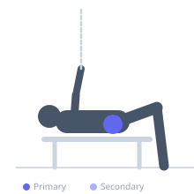

Exercise guide / Banded Clamshell
Banded Clamshell
The banded clamshell is a rehabilitation exercise for the hip abductors and external rotators, particularly gluteus medius and the deep external rotators. Performed side-lying with a resistance band loop above the knees, it isolates hip external rotation while the pelvis remains stable. It is widely prescribed for patellofemoral pain, IT band syndrome, and hip weakness contributing to knee valgus during functional movements.
Primary muscles
gluteus medius
gluteus minimus
Secondary muscles
Stabilizers
transverse abdominis
Equipment
Resistance Band (Loop / Mini Band)


Starting position
- Lie on one side with hips stacked, knees bent to approximately 45 degrees, and a resistance band loop positioned just above the knees.
Setup
- Use a light-to-medium resistance band loop. The feet remain together and stacked throughout the movement.
Steps
- Step 1: Lie on your side with hips and knees bent to 45 degrees, feet stacked.
- Step 2: Place the resistance band loop above both knees.
- Step 3: Keeping feet together, rotate the top knee upward toward the ceiling like a clamshell opening.
- Step 4: Rotate as high as the hip allows without the pelvis rocking backward.
- Step 5: Slowly lower the knee back to the starting position with control.
- Step 6: Complete all reps on one side, then switch.
Coaching cues
- Keep your pelvis completely still — do not let it rock back
- Think about rotating the thigh, not lifting the knee
- Slow and controlled wins over heavy and sloppy
Breathing
- Exhale as the knee lifts. Inhale as it returns.
Range of motion
- The knee should rise as far as the hip external rotators allow without pelvic rotation — typically 30–45 degrees from the starting position.
Tempo
- 2-second lift, 1-second hold at top, 2-second lower. 2–3 sets of 15–20 reps.
Common mistakes
- Rolling the pelvis backward as the knee rises — the pelvis must stay completely still
- Using momentum instead of a controlled, slow movement
- Choosing too heavy a band, which forces compensation through pelvis rotation
Safety
- This exercise is generally appropriate for all rehabilitation populations
- If hip pain occurs, reduce range of motion and consult a clinician
Training
- strength: 15–20 reps
- strength: 2–3 sets
- Rest: {'strength': 60}